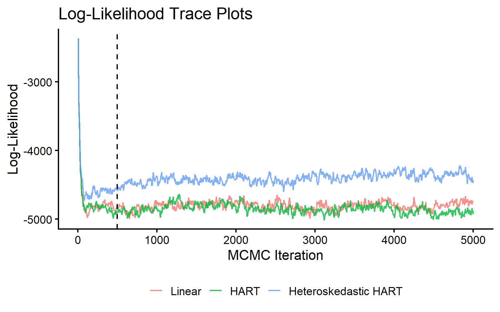
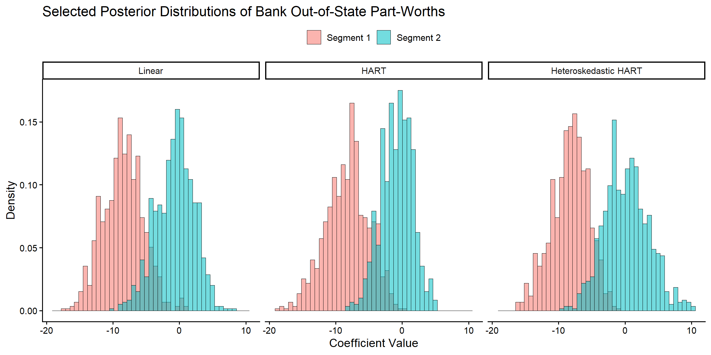
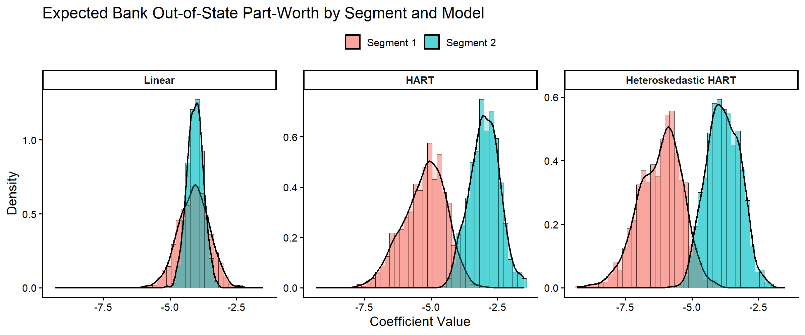
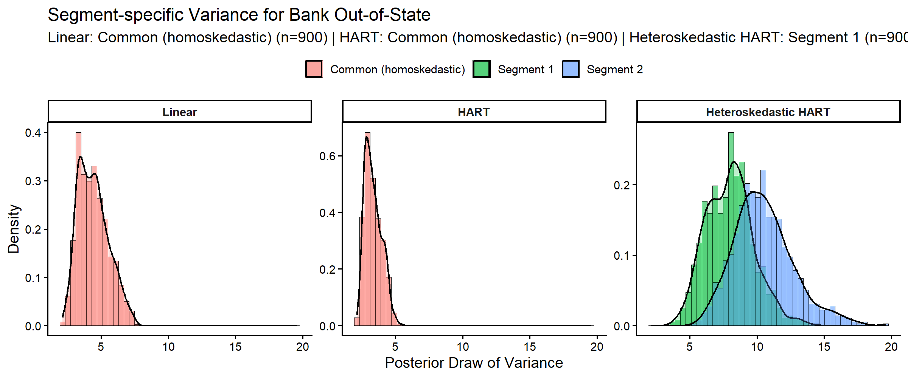
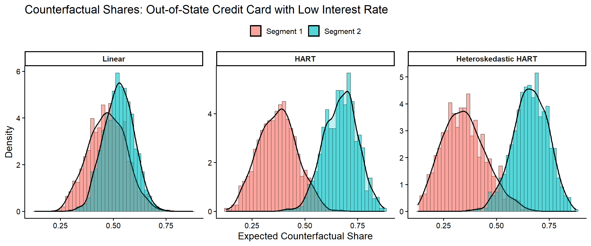
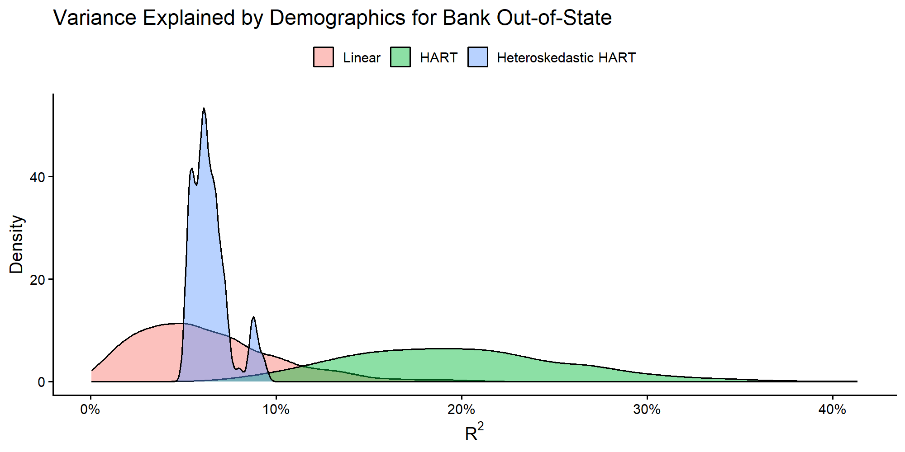
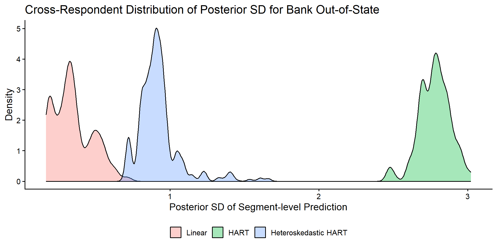

Bank Conjoint: Heteroskedastic HART
2026-05-13
bayesm-HART-heteroskedastic-hart-bank.RmdIntroduction
This vignette extends the standard bank example to a
three-model comparison:
- Linear hierarchical MNL (
Delta' Z) - HART mean model (
Delta(Z)) - Heteroskedastic HART (
Delta(Z)andSigma(Z))
The first two models differ in how they model the representative consumer. The third model additionally allows the covariance of unobserved heterogeneity to vary with demographics through tree models on the modified-Cholesky components.
Conjoint Data of Allenby and Ginter (1995)
# Load dependencies
library(bayesm.HART)
library(bayesm)
library(tidyr)
library(dplyr)
library(ggplot2)
# Load and prepare bank data
data(bank)
choiceAtt <- bank$choiceAtt
hh <- levels(factor(choiceAtt$id))
nhh <- length(hh)
lgtdata <- vector("list", length = nhh)
for (i in 1:nhh) {
y <- 2 - choiceAtt[choiceAtt[, 1] == hh[i], 2]
X_temp <- as.matrix(choiceAtt[choiceAtt[, 1] == hh[i], c(3:16)])
X <- matrix(0, nrow = nrow(X_temp) * 2, ncol = ncol(X_temp))
X[seq(1, nrow(X), by = 2), ] <- X_temp
lgtdata[[i]] <- list(y = y, X = X)
}
Z <- as.matrix(bank$demo[, -1]) # omit id
Z <- t(t(Z) - colMeans(Z)) # centered Z as required by rhier*
Data <- list(lgtdata = lgtdata, Z = Z, p = 2)MCMC Estimation: Three Models
# MCMC parameters
R <- 5000
burn <- 500
keep <- 5
Mcmc <- list(R = R, keep = keep)
model_cache_file <- file.path(
vignette_cache_dir,
sprintf("bank-heteroskedastic-models-nodart-R%s-keep%s.rds", R, keep)
)
model_cache_ok <- FALSE
if (file.exists(model_cache_file)) {
model_cache <- tryCatch(readRDS(model_cache_file), error = function(e) NULL)
model_cache_ok <- !is.null(model_cache) &&
is.list(model_cache) &&
!is.null(model_cache$out_lin) &&
!is.null(model_cache$out_hart) &&
!is.null(model_cache$out_heter)
if (model_cache_ok) {
out_lin <- model_cache$out_lin
out_hart <- model_cache$out_hart
out_heter <- model_cache$out_heter
# Restore S3 class vectors lost by saveRDS/readRDS
class(out_lin) <- "rhierMnlRwMixture"
class(out_hart) <- "rhierMnlRwMixture"
class(out_heter) <- c("rhierMnlRwMixtureHeterCov",
"bayesm.HART.HeterCov",
"rhierMnlRwMixture")
cat("Loaded cached model draws from:", model_cache_file, "\n")
}
}
if (!model_cache_ok) {
# (1) Linear hierarchical MNL
out_lin <- bayesm.HART::rhierMnlRwMixture(
Data = Data, Mcmc = Mcmc,
Prior = list(ncomp = 1),
r_verbose = FALSE
)
# (2) HART mean model
out_hart <- bayesm.HART::rhierMnlRwMixture(
Data = Data, Mcmc = Mcmc,
Prior = list(
ncomp = 1,
bart = list(num_trees = 20, sparse = FALSE)
),
r_verbose = FALSE
)
# (3) HART mean + heteroscedastic covariance Sigma(Z)
out_heter <- bayesm.HART::rhierMnlRwMixture(
Data = Data, Mcmc = Mcmc,
Prior = list(
ncomp = 1,
bart = list(num_trees = 20, sparse = FALSE),
vartree = list(num_trees = 20, sparse = FALSE),
phitree = list(num_trees = 20, sparse = FALSE)
),
r_verbose = FALSE
)
saveRDS(
list(
out_lin = out_lin,
out_hart = out_hart,
out_heter = out_heter,
generated_at = Sys.time()
),
model_cache_file
)
cat("Saved model draws cache to:", model_cache_file, "\n")
}We first compare log-likelihood traces for all three models.
burnin_draws <- ceiling(burn / keep)
mcmc_data <- data.frame(
Iteration = (1:length(out_lin$loglike)) * keep,
Linear = out_lin$loglike,
HART = out_hart$loglike,
HeteroskedasticHART = out_heter$loglike
) %>%
pivot_longer(
cols = c("Linear", "HART", "HeteroskedasticHART"),
names_to = "Model",
values_to = "LogLikelihood"
) %>%
mutate(
Model = recode(Model, HeteroskedasticHART = "Heteroskedastic HART"),
Model = factor(Model, levels = c("Linear", "HART", "Heteroskedastic HART"))
)
ggplot(mcmc_data, aes(x = Iteration, y = LogLikelihood, color = Model)) +
geom_line(alpha = 0.8) +
geom_vline(xintercept = burn, linetype = "dashed", color = "black") +
theme_classic(base_size = 16) +
labs(title = "Log-Likelihood Trace Plots", x = "MCMC Iteration", y = "Log-Likelihood") +
theme(legend.title = element_blank(), legend.position = "bottom")
MCMC traceplot of log-likelihood across linear, HART mean, and heteroskedastic HART models.
Respondent-level Part-Worths
Following the discussion in Wiemann (2025), we examine two consumer segments defined by their demographics:
- Segment 1 (respondent 146): older women with low income
- Segment 2 (respondent 580): middle-aged men with moderate income
We focus on one focal coefficient:
Bank Out-of-State.
selected_resp <- c(146, 580)
coef_indx <- 10
coef_name <- colnames(bank$choiceAtt[, 3:16])[coef_indx]
coef_label <- "Bank Out-of-State"
if (!grepl("out", tolower(coef_name)) || !grepl("state", tolower(coef_name))) {
coef_label <- coef_name
}
beta_draws <- bind_rows(
as.data.frame(t(out_lin$betadraw[selected_resp, coef_indx, -c(1:burnin_draws)])) %>%
mutate(Model = "Linear", Draw = row_number()),
as.data.frame(t(out_hart$betadraw[selected_resp, coef_indx, -c(1:burnin_draws)])) %>%
mutate(Model = "HART", Draw = row_number()),
as.data.frame(t(out_heter$betadraw[selected_resp, coef_indx, -c(1:burnin_draws)])) %>%
mutate(Model = "Heteroskedastic HART", Draw = row_number())
) %>%
mutate(Model = factor(Model, levels = c("Linear", "HART", "Heteroskedastic HART")))
colnames(beta_draws)[1:2] <- paste("Segment", 1:2)
beta_draws_long <- beta_draws %>%
pivot_longer(cols = starts_with("Segment"), names_to = "Segment", values_to = "Coefficient")
ggplot(beta_draws_long, aes(x = Coefficient, fill = Segment)) +
geom_histogram(aes(y = after_stat(density)), bins = 45, alpha = 0.55,
position = "identity", color = "black", linewidth = 0.2) +
facet_wrap(~Model, ncol = 3) +
theme_classic(base_size = 14) +
labs(
title = paste("Selected Posterior Distributions of", coef_label, "Part-Worths"),
x = "Coefficient Value",
y = "Density"
) +
theme(legend.position = "top", legend.title = element_blank())
Posterior distributions of respondent-level out-of-state part-worths for two respondents across three models.
Segment-level Out-of-State Effects
Before moving to segment-share implications, we focus on one
coefficient: the expected part-worth for Bank Out-of-State
in the two selected segments.
# Predict only for the two highlighted segments to keep memory use modest.
Data_seg <- list(Z = Z[selected_resp, , drop = FALSE])
segment_cache_file <- file.path(
vignette_cache_dir,
sprintf(
"bank-heteroskedastic-segment-nodart-resp-%s-coef-%s-burndraws-%s.rds",
paste(selected_resp, collapse = "-"),
coef_indx,
burnin_draws
)
)
segment_cache_ok <- FALSE
if (file.exists(segment_cache_file)) {
segment_cache <- tryCatch(readRDS(segment_cache_file), error = function(e) NULL)
segment_cache_ok <- !is.null(segment_cache) &&
is.array(segment_cache$DeltaZ_heter) &&
is.array(segment_cache$SigmaZ_heter) &&
length(dim(segment_cache$SigmaZ_heter)) == 4
if (segment_cache_ok) {
DeltaZ_lin <- segment_cache$DeltaZ_lin
DeltaZ_hart <- segment_cache$DeltaZ_hart
DeltaZ_heter <- segment_cache$DeltaZ_heter
SigmaZ_heter <- segment_cache$SigmaZ_heter
cat("Loaded cached segment draws from:", segment_cache_file, "\n")
}
}
if (!segment_cache_ok) {
DeltaZ_lin <- predict(
out_lin, newdata = Data_seg, type = "DeltaZ+mu", burn = burnin_draws, r_verbose = FALSE
)
DeltaZ_hart <- predict(
out_hart, newdata = Data_seg, type = "DeltaZ+mu", burn = burnin_draws, r_verbose = FALSE
)
DeltaZ_heter <- predict(
out_heter, newdata = Data_seg, type = "DeltaZ+mu", burn = burnin_draws, r_verbose = FALSE
)
SigmaZ_heter <- predict(
out_heter, newdata = Data_seg, type = "SigmaZ", burn = burnin_draws, r_verbose = FALSE
)
saveRDS(
list(
DeltaZ_lin = DeltaZ_lin,
DeltaZ_hart = DeltaZ_hart,
DeltaZ_heter = DeltaZ_heter,
SigmaZ_heter = SigmaZ_heter,
selected_resp = selected_resp,
coef_indx = coef_indx,
burnin_draws = burnin_draws,
generated_at = Sys.time()
),
segment_cache_file
)
cat("Saved segment draws cache to:", segment_cache_file, "\n")
}
segment_coef_df <- bind_rows(
data.frame(
Model = "Linear",
Segment = "Segment 1",
Coefficient = DeltaZ_lin[1, coef_indx, ]
),
data.frame(
Model = "Linear",
Segment = "Segment 2",
Coefficient = DeltaZ_lin[2, coef_indx, ]
),
data.frame(
Model = "HART",
Segment = "Segment 1",
Coefficient = DeltaZ_hart[1, coef_indx, ]
),
data.frame(
Model = "HART",
Segment = "Segment 2",
Coefficient = DeltaZ_hart[2, coef_indx, ]
),
data.frame(
Model = "Heteroskedastic HART",
Segment = "Segment 1",
Coefficient = DeltaZ_heter[1, coef_indx, ]
),
data.frame(
Model = "Heteroskedastic HART",
Segment = "Segment 2",
Coefficient = DeltaZ_heter[2, coef_indx, ]
)
) %>%
mutate(
Model = factor(Model, levels = c("Linear", "HART", "Heteroskedastic HART")),
Segment = factor(Segment, levels = c("Segment 1", "Segment 2"))
)
ggplot(segment_coef_df, aes(x = Coefficient, fill = Segment)) +
geom_histogram(
aes(y = after_stat(density)),
bins = 45,
alpha = 0.55,
position = "identity",
color = "black",
linewidth = 0.2
) +
geom_density(alpha = 0.25, linewidth = 0.8) +
facet_wrap(~Model, ncol = 3, scales = "free_y") +
theme_classic(base_size = 14) +
labs(
title = paste("Expected", coef_label, "Part-Worth by Segment and Model"),
x = "Coefficient Value",
y = "Density"
) +
theme(
legend.position = "top",
legend.title = element_blank(),
strip.text = element_text(face = "bold")
)
Posterior distributions of segment-level expected out-of-state part-worths across linear, HART, and heteroskedastic HART models.
coef_summary <- segment_coef_df %>%
group_by(Model, Segment) %>%
summarise(
Mean = mean(Coefficient),
Median = median(Coefficient),
P05 = quantile(Coefficient, 0.05),
P95 = quantile(Coefficient, 0.95),
.groups = "drop"
)
print(coef_summary, digits = 3)
#> # A tibble: 6 × 6
#> Model Segment Mean Median P05 P95
#> <fct> <fct> <dbl> <dbl> <dbl> <dbl>
#> 1 Linear Segment 1 -4.11 -4.09 -5.05 -3.17
#> 2 Linear Segment 2 -4.06 -4.05 -4.55 -3.57
#> 3 HART Segment 1 -5.25 -5.16 -6.68 -4.06
#> 4 HART Segment 2 -2.99 -2.98 -3.95 -2.11
#> 5 Heteroskedastic HART Segment 1 -6.19 -6.09 -7.58 -4.95
#> 6 Heteroskedastic HART Segment 2 -3.82 -3.84 -4.85 -2.82
coef_diff_lin <- DeltaZ_lin[2, coef_indx, ] - DeltaZ_lin[1, coef_indx, ]
coef_diff_hart <- DeltaZ_hart[2, coef_indx, ] - DeltaZ_hart[1, coef_indx, ]
coef_diff_heter <- DeltaZ_heter[2, coef_indx, ] - DeltaZ_heter[1, coef_indx, ]
cat("Pr(Expected part-worth Segment 2 > Segment 1):\n")
#> Pr(Expected part-worth Segment 2 > Segment 1):
cat(" Linear =", round(mean(coef_diff_lin > 0), 3), "\n")
#> Linear = 0.522
cat(" HART =", round(mean(coef_diff_hart > 0), 3), "\n")
#> HART = 0.991
cat(" Heteroskedastic HART =", round(mean(coef_diff_heter > 0), 3), "\n")
#> Heteroskedastic HART = 0.992Covariance Heterogeneity: vs
In the heteroskedastic HART model, covariance of unobserved heterogeneity varies with demographics through tree models on modified-Cholesky components. We compare posterior variances for the focal out-of-state part-worth across all three models. For linear and HART, covariance is homoskedastic, so each model contributes one common variance distribution; heteroskedastic HART yields segment-specific distributions.
extract_homoskedastic_var_draws <- function(fit, coef_indx, burnin_draws) {
compdraw <- fit$nmix$compdraw
if (is.null(compdraw) || length(compdraw) == 0) return(numeric(0))
keep_start <- min(burnin_draws + 1, length(compdraw))
keep_idx <- seq.int(keep_start, length(compdraw))
vapply(keep_idx, function(ii) {
draw_i <- compdraw[[ii]][[1]]
rooti <- draw_i$rooti
if (is.null(rooti)) return(NA_real_)
Sigma <- tryCatch(solve(crossprod(rooti)), error = function(e) NULL)
if (is.null(Sigma)) return(NA_real_)
Sigma[coef_indx, coef_indx]
}, numeric(1))
}
segment_var_draws <- lapply(seq_len(nrow(Data_seg$Z)), function(i) {
SigmaZ_heter[i, coef_indx, coef_indx, ]
})
lin_var_draws <- extract_homoskedastic_var_draws(out_lin, coef_indx, burnin_draws)
hart_var_draws <- extract_homoskedastic_var_draws(out_hart, coef_indx, burnin_draws)
segment_labels <- c("Segment 1", "Segment 2")
var_df <- bind_rows(
data.frame(
Model = "Heteroskedastic HART",
Segment = segment_labels[1],
Variance = segment_var_draws[[1]]
),
data.frame(
Model = "Heteroskedastic HART",
Segment = segment_labels[2],
Variance = segment_var_draws[[2]]
),
data.frame(
Model = "Linear",
Segment = "Common (homoskedastic)",
Variance = lin_var_draws
),
data.frame(
Model = "HART",
Segment = "Common (homoskedastic)",
Variance = hart_var_draws
)
) %>%
mutate(
Model = factor(Model, levels = c("Linear", "HART", "Heteroskedastic HART"))
) %>%
mutate(Variance = as.numeric(Variance)) %>%
filter(is.finite(Variance), Variance > 0)
if (nrow(var_df) == 0) {
stop("No finite positive SigmaZ draws available for the selected segment variance plot.")
}
n_by_group <- var_df %>%
count(Model, Segment, name = "n")
segment_n_subtitle <- paste(
sprintf("%s: %s (n=%s)", n_by_group$Model, n_by_group$Segment, n_by_group$n),
collapse = " | "
)
ggplot(var_df, aes(x = Variance, fill = Segment)) +
geom_histogram(
aes(y = after_stat(density)),
bins = 45,
alpha = 0.55,
position = "identity",
color = "black",
linewidth = 0.2
) +
geom_density(alpha = 0.25, linewidth = 0.8) +
facet_wrap(~Model, ncol = 3, scales = "free_y") +
theme_classic(base_size = 14) +
labs(
title = paste("Segment-specific Variance for", coef_label),
subtitle = segment_n_subtitle,
x = "Posterior Draw of Variance",
y = "Density"
) +
theme(
legend.position = "top",
legend.title = element_blank(),
strip.text = element_text(face = "bold")
)
Posterior variance distributions for the focal part-worth across linear, HART, and heteroskedastic HART models.
variance_summary <- var_df %>%
group_by(Model, Segment) %>%
summarise(
Mean = mean(Variance),
Median = median(Variance),
P05 = quantile(Variance, 0.05),
P95 = quantile(Variance, 0.95),
.groups = "drop"
)
print(variance_summary, digits = 3)
#> # A tibble: 4 × 6
#> Model Segment Mean Median P05 P95
#> <fct> <chr> <dbl> <dbl> <dbl> <dbl>
#> 1 Linear Common (homoskedastic) 4.41 4.30 2.89 6.46
#> 2 HART Common (homoskedastic) 3.34 3.22 2.49 4.46
#> 3 Heteroskedastic HART Segment 1 7.98 8.02 5.35 11.1
#> 4 Heteroskedastic HART Segment 2 10.5 10.3 7.19 14.7
variance_ratio <- segment_var_draws[[2]] / pmax(segment_var_draws[[1]], .Machine$double.eps)
cat("Pr(Variance Segment 2 > Segment 1) =",
round(mean(variance_ratio > 1), 3), "\n")
#> Pr(Variance Segment 2 > Segment 1) = 0.89
cat("Median variance ratio (Segment 2 / Segment 1) =",
round(median(variance_ratio), 3), "\n")
#> Median variance ratio (Segment 2 / Segment 1) = 1.311The heteroskedastic HART model includes additional tree ensembles for covariance components.
nvar <- dim(out_heter$betadraw)[2]
phi_edge_count <- sum(
sapply(seq_len(nvar), function(j) {
if (j == 1 || is.null(out_heter$phi_models[[j]])) return(0L)
length(out_heter$phi_models[[j]])
})
)
cat("Heteroskedastic HART covariance model summary:\n")
#> Heteroskedastic HART covariance model summary:
cat("Number of coefficients (nvar):", nvar, "\n")
#> Number of coefficients (nvar): 14
cat("Number of variance-tree ensembles:", length(out_heter$var_models), "\n")
#> Number of variance-tree ensembles: 14
cat("Number of off-diagonal phi tree ensembles:", phi_edge_count, "\n")
#> Number of off-diagonal phi tree ensembles: 91Counterfactual Shares of Out-of-State Credit Card Offerings
Following Wiemann (2025, Section 5.3), we consider the design of an out-of-state credit card that is most likely to succeed against existing offerings. We compute expected counterfactual shares for potential offerings against a baseline in-state credit card. These counterfactuals capture the comprehensive demand response through both observed preference heterogeneity via and unobserved preference heterogeneity—including correlated preferences—captured by (or for the heteroskedastic model).
# Define counterfactual design matrices (p=2, 1 task)
nvar <- 14
# Scenario 1: Out-of-State Bank only
X_oos <- matrix(0, 2, nvar)
X_oos[1, 10] <- 1
# Scenario 2: Out-of-State Bank & Low Interest
X_oos_int <- matrix(0, 2, nvar)
X_oos_int[1, c(2, 10)] <- 1
# Scenario 3: Out-of-State Bank & Low Annual Fee
X_oos_fee <- matrix(0, 2, nvar)
X_oos_fee[1, c(8, 10)] <- 1
scenarios <- list(
"Out-of-State Bank" = X_oos,
"Out-of-State & Low Interest" = X_oos_int,
"Out-of-State & Low Annual Fee" = X_oos_fee
)
# Compute counterfactual shares for all models x segments x scenarios
models_list <- list(Linear = out_lin, HART = out_hart, `Heteroskedastic HART` = out_heter)
cf_results <- list()
for (sc_name in names(scenarios)) {
X_cf <- scenarios[[sc_name]]
for (mod_name in names(models_list)) {
probs <- predict(
models_list[[mod_name]],
newdata = list(
Z = Z[selected_resp, , drop = FALSE],
X = list(X_cf, X_cf),
p = 2
),
mode = "prior", type = "choice_probs", burn = burnin_draws, nsim = 50, r_verbose = FALSE
)
for (seg in 1:2) {
# probs[[seg]] is [1, 2, ndraws]: Pr(alt 1 = out-of-state card)
share_draws <- probs[[seg]][1, 1, ]
cf_results[[length(cf_results) + 1]] <- data.frame(
Scenario = sc_name,
Model = mod_name,
Segment = paste("Segment", seg),
Share = share_draws
)
}
}
}
cf_df <- bind_rows(cf_results) %>%
mutate(
Model = factor(Model, levels = c("Linear", "HART", "Heteroskedastic HART")),
Segment = factor(Segment, levels = c("Segment 1", "Segment 2"))
)
# Summary table (matching Table 3 of Wiemann 2025)
cf_summary <- cf_df %>%
group_by(Scenario, Model, Segment) %>%
summarise(
Mean = round(mean(Share), 2),
SD = round(sd(Share), 2),
.groups = "drop"
) %>%
mutate(Est = sprintf("%.2f (%.2f)", Mean, SD)) %>%
select(Scenario, Model, Segment, Est) %>%
pivot_wider(names_from = c(Segment, Model), values_from = Est)
print(cf_summary)
#> # A tibble: 3 × 7
#> Scenario `Segment 1_Linear` `Segment 2_Linear` `Segment 1_HART`
#> <chr> <chr> <chr> <chr>
#> 1 Out-of-State & Low Ann… 0.51 (0.08) 0.48 (0.07) 0.46 (0.09)
#> 2 Out-of-State & Low Int… 0.47 (0.09) 0.53 (0.07) 0.37 (0.09)
#> 3 Out-of-State Bank 0.17 (0.06) 0.18 (0.05) 0.11 (0.05)
#> # ℹ 3 more variables: `Segment 2_HART` <chr>,
#> # `Segment 1_Heteroskedastic HART` <chr>,
#> # `Segment 2_Heteroskedastic HART` <chr>
# Plot: Out-of-State & Low Interest scenario (matching Figure 6)
cf_plot_df <- cf_df %>%
filter(Scenario == "Out-of-State & Low Interest")
ggplot(cf_plot_df, aes(x = Share, fill = Segment)) +
geom_histogram(
aes(y = after_stat(density)),
bins = 45, alpha = 0.55, position = "identity",
color = "black", linewidth = 0.2
) +
geom_density(alpha = 0.25, linewidth = 0.8) +
facet_wrap(~Model, ncol = 3, scales = "free_y") +
theme_classic(base_size = 14) +
labs(
title = "Counterfactual Shares: Out-of-State Credit Card with Low Interest Rate",
x = "Expected Counterfactual Share",
y = "Density"
) +
theme(
legend.position = "top",
legend.title = element_blank(),
strip.text = element_text(face = "bold")
)
Posterior distributions of expected counterfactual shares of an out-of-state credit card with low interest rate against a baseline in-state credit card.
Quantifying Explained Variance ()
To quantify explained demographic heterogeneity, we compute a
Bayesian R^2 measure. This is the fraction of latent
preference heterogeneity explained by observed demographics
Z. For heteroskedastic HART, R^2 is
respondent-specific because Sigma(Z_i) varies across
i.
# Model-agnostic R² via summary() (handles both homo- and heteroscedastic models)
smry_lin <- summary(out_lin, Z = Z, burn = burnin_draws, coefs = coef_indx)
smry_hart <- summary(out_hart, Z = Z, burn = burnin_draws, coefs = coef_indx)
smry_heter <- summary(out_heter, Z = Z, burn = burnin_draws, coefs = coef_indx)
# For heteroscedastic models, R2_draws is a list of per-coef matrices;
# collapse to per-respondent posterior mean for the density plot
r2_heter_per_resp <- colMeans(smry_heter$r2$R2_draws[[1]])
r2_data <- bind_rows(
data.frame(Model = "Linear", R2 = smry_lin$r2$R2_draws[, 1]),
data.frame(Model = "HART", R2 = smry_hart$r2$R2_draws[, 1]),
data.frame(Model = "Heteroskedastic HART", R2 = r2_heter_per_resp)
) %>%
mutate(Model = factor(Model, levels = c("Linear", "HART", "Heteroskedastic HART")))
ggplot(r2_data, aes(x = R2, fill = Model)) +
geom_density(alpha = 0.45, color = "black") +
scale_x_continuous(labels = scales::percent_format(accuracy = 1)) +
theme_classic(base_size = 14) +
labs(
title = paste("Variance Explained by Demographics for", coef_label),
x = expression(R^2),
y = "Density"
) +
theme(legend.title = element_blank(), legend.position = "top")
Posterior distributions of explained variance for the focal part-worth.
cat("Posterior Mean R² (Linear):", round(smry_lin$r2$R2_mean * 100, 2), "%\n")
#> Posterior Mean R² (Linear): 6.17 %
cat("Posterior Mean R² (HART) :", round(smry_hart$r2$R2_mean * 100, 2), "%\n")
#> Posterior Mean R² (HART) : 19.74 %
cat("Mean per-respondent R² (Heter):", round(smry_heter$r2$R2_mean * 100, 2), "%\n")
#> Mean per-respondent R² (Heter): 6.44 %Cross-Respondent Uncertainty
Finally, we compare respondent-level uncertainty in segment
predictions by model. For each respondent, we compute the posterior SD
of DeltaZ for the focal coefficient and then inspect the
cross-respondent distribution of those SD values. Note that
DeltaZ+mu differs from DeltaZ only by a
per-draw constant
,
so the cross-respondent SD is identical.
# Predict DeltaZ for all respondents (cached fast path --- essentially free)
Data_all <- list(Z = Z)
DeltaZ_lin <- predict(out_lin, newdata = Data_all, type = "DeltaZ",
burn = burnin_draws, r_verbose = FALSE)
DeltaZ_hart <- predict(out_hart, newdata = Data_all, type = "DeltaZ",
burn = burnin_draws, r_verbose = FALSE)
DeltaZ_heter <- predict(out_heter, newdata = Data_all, type = "DeltaZ",
burn = burnin_draws, r_verbose = FALSE)
sd_lin <- apply(DeltaZ_lin[, coef_indx, ], 1, sd)
sd_hart <- apply(DeltaZ_hart[, coef_indx, ], 1, sd)
sd_heter <- apply(DeltaZ_heter[, coef_indx, ], 1, sd)
rm(DeltaZ_lin, DeltaZ_hart, DeltaZ_heter); gc(verbose = FALSE)
#> used (Mb) gc trigger (Mb) max used (Mb)
#> Ncells 1767919 94.5 3055068 163.2 3055068 163.2
#> Vcells 222538613 1697.9 455204936 3473.0 568998725 4341.2
unc_df <- bind_rows(
data.frame(Model = "Linear", SD = sd_lin),
data.frame(Model = "HART", SD = sd_hart),
data.frame(Model = "Heteroskedastic HART", SD = sd_heter)
) %>%
mutate(Model = factor(Model, levels = c("Linear", "HART", "Heteroskedastic HART")))
ggplot(unc_df, aes(x = SD, fill = Model)) +
geom_density(alpha = 0.35) +
theme_classic(base_size = 14) +
labs(
title = paste("Cross-Respondent Distribution of Posterior SD for", coef_label),
x = "Posterior SD of Segment-level Prediction",
y = "Density"
) +
theme(legend.position = "bottom", legend.title = element_blank())
Distribution across respondents of posterior SD for segment-level focal part-worth predictions.
References
Allenby, Greg M. and James L. Ginter (1995). “Using Extremes to Design Products and Segment Markets.” Journal of Marketing Research 32(4), pp. 392–403.
Rossi, Peter E., Greg M. Allenby, and Robert McCulloch (2009). Bayesian Statistics and Marketing. Reprint. Wiley Series in Probability and Statistics. Chichester: Wiley.
Wiemann, Thomas (2025). “Personalization with HART.” Working paper.